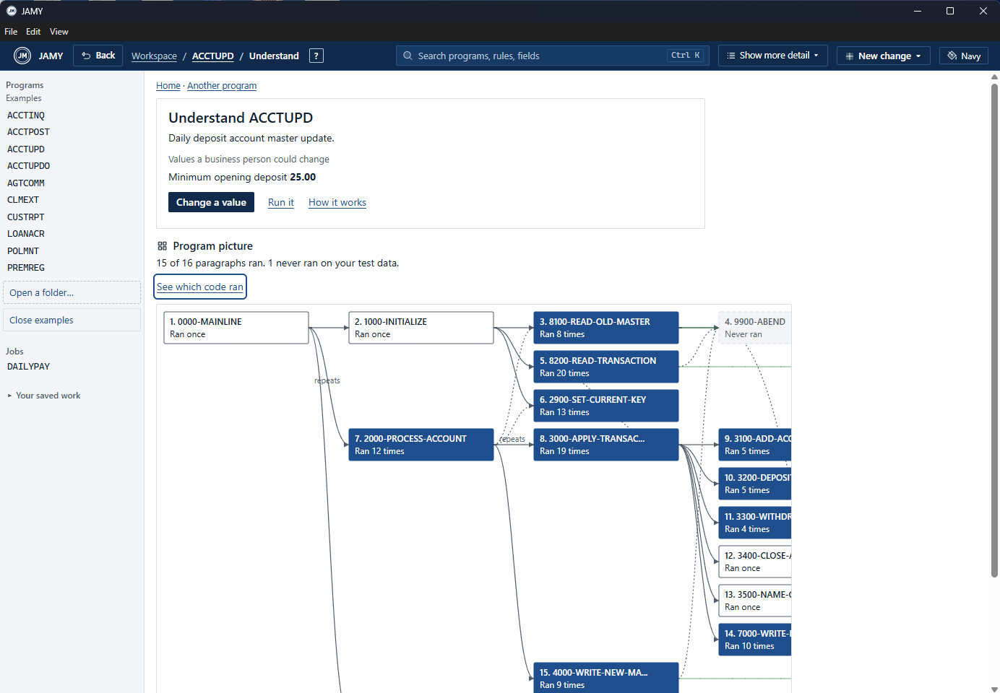
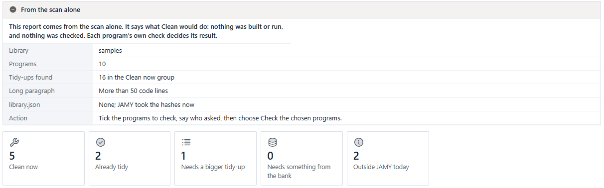

One tool, three jobs
Anyone who works on COBOL they didn’t write has the same three jobs. JAMY does each of them on the PC, with nothing sent anywhere.
Understand
See what a program really does
- A flow chart of the program you can click through.
- How many times each part ran on your test data, and which parts never ran.
- A plain description of what the program does.
- A map of the jobs and files it touches.

Check a change
Prove what a change did
- JAMY runs the old and the new program on the same test files.
- It compares every byte of every output.
- It says in plain words what changed and what stayed the same.
- It doesn’t matter who wrote the change: a person or an AI tool.

Clean up
Find what can safely go
- JAMY scans a whole folder of programs for dead code and tidy-ups.
- It sorts each program: clean now, already tidy, or needs a bigger tidy-up.
- Every clean-up is checked like any other change, so you know nothing else moved.
